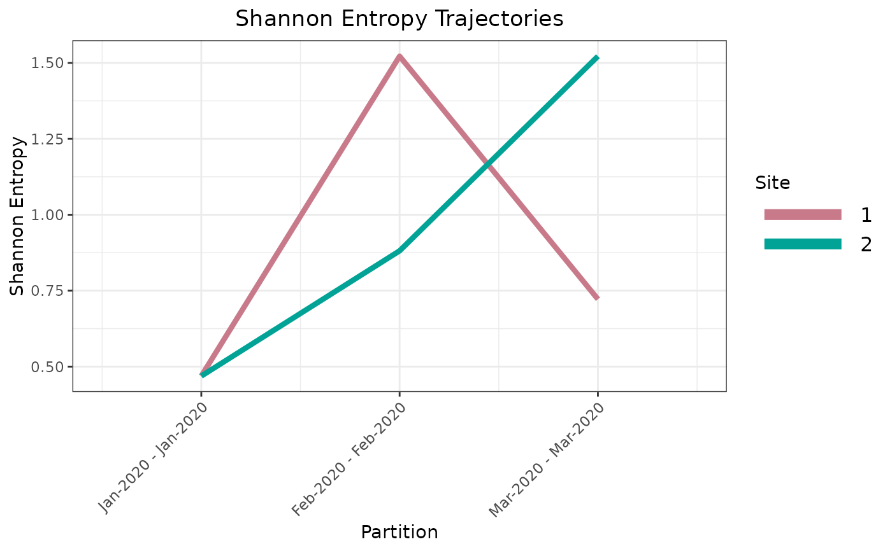

Plot Shannon Entropy Trajectories
Source:R/plot_entropy_trajectories.R
plot_entropy_trajectories.RdPlots per-site Shannon entropy as continuous trajectories across
time partitions for a selected set of sequence sites, using the output of
partition_time_windows.
Usage
plot_entropy_trajectories(
part_data,
sites = NULL,
labels = NULL,
site_colors = NULL,
by_group = FALSE,
groups_list = NULL,
line_type_groups = NULL,
line_size_groups = NULL,
transformation = NULL,
line_size = 1.5,
legend = TRUE,
legend_text_size = 12,
x_angle = 45,
grayscale = FALSE,
plot_title = "Shannon Entropy Trajectories"
)Arguments
- part_data
Named list. Output of
partition_time_windows, optionally with per-partitionClusters[[i]]$DataFramealready relabeled by the user viarelabel_entropy_classes. Must contain elementsClusters,Max_Entropy,Dates_Labels, andN_partitions.- sites
Integer vector. Site indices to include. Defaults to the union of all sites observed across all partitions (i.e. every site that has non-zero, non-singleton entropy in at least one partition window).
- labels
Character vector of length
N_partitions. Partition labels used on the x-axis. Defaults topart_data$Dates_Labels.- site_colors
Named character vector. Names are site indices as character strings (e.g.
"681"); values are colour strings (e.g."#FB8072"). Sites absent fromsite_colorsreceive automatically assigned colours. Default isNULL(all colours auto-assigned).- by_group
Logical. If
TRUE, maps line type and line width to site groups defined bygroups_list. Default isFALSE.- groups_list
List of integer vectors. Each element specifies the site indices belonging to one explicit group. Sites in
sitesnot covered by any explicit group are automatically assigned to a remainder group appended as the final element. Total group count (explicit plus remainder) must not exceed 6. Required whenby_group = TRUE.- line_type_groups
Character vector. One line-type string per group (in order, including the automatic remainder group). Must have length equal to the total number of groups. Defaults to
"solid"for the first group and"dashed"for all remaining groups.- line_size_groups
Numeric vector. One line-width value per group (in order, including the automatic remainder group). Must have length equal to the total number of groups. Defaults to
2for the first group and1for all remaining groups.- transformation
Object of class
"transform"or"trans"as returned bytrans_new, orNULL(identity, no transformation). Applied to the y-axis viascale_y_continuous. Default isNULL.- line_size
Numeric. Line width used when
by_group = FALSE. Default is1.5.- legend
Logical. If
TRUE(default), the site colour legend is displayed.- legend_text_size
Numeric. Font size of legend text in points. Default is
12.- x_angle
Numeric. Rotation angle of x-axis tick labels in degrees. Default is
45.- grayscale
Logical. If
TRUE, overridessite_colorsand renders all trajectories in greyscale. Default isFALSE.- plot_title
Character. Plot title string. Default is
"Shannon Entropy Trajectories".
Value
A named list with five elements:
- Data_Frame
Long-format data frame with columns
sites(factor),entropies(numeric),class(factor),max_class(integer),period(integer), andcoverage(character, partition label). Suitable for direct input toplot_site_class_trajectory.- Plot
A
ggplotobject. Augment with additional layers (e.g.geom_vlinefor VOC emergence events) before printing or saving withggsave.- Colors
Named character vector mapping each plotted site index (character) to its assigned colour string. Pass as
site_colorsto subsequent calls toplot_entropy_trajectoriesfor a consistent colour scheme across figures.- XBreaks
Integer vector of partition period indices. Pass as
xbreakstoplot_site_class_trajectory.- XLabels
Character vector of partition labels aligned with
XBreaks. Pass asxlabelstoplot_site_class_trajectory.
Details
For each partition the function extracts the GMM clustering result from
part_data$Clusters and assembles a long-format data frame spanning
all selected sites across all partitions. Sites absent from a given
partition (removed by zero-entropy or singleton filtering, or because the
partition window was empty) are silently omitted from that partition's
trajectory and do not interrupt adjacent observations.
Class relabeling. This function does not perform any relabeling of
GMM class labels. If class 1 must denote the highest-entropy group
throughout the returned $Data_Frame (e.g. before passing it to
plot_site_class_trajectory), the user should call
relabel_entropy_classes on each partition's
Clusters[[i]]$DataFrame and update Max_Entropy[i] to
1L prior to calling this function.
Colour scheme. Site colours are specified through
site_colors, a named character vector whose names are site indices
(as character strings) and whose values are valid R colour strings. Any
site not listed in site_colors receives an automatically assigned
colour from the HCL "Dark 2" qualitative palette. The final colour
mapping is returned as $Colors so the same scheme can be passed to
subsequent calls for cross-plot consistency.
Group-stratified trajectories (by_group = TRUE). When
biological groupings must be distinguished visually (e.g. defining SNP
sites vs. other mutation sites), groups_list partitions
sites into explicitly named groups. Any site not assigned to an
explicit group is automatically collected into a remainder group appended
as the final element of groups_list. Line type and line width are
mapped to group membership via line_type_groups and
line_size_groups, both of which must have length equal to the
total number of groups (explicit plus the automatic remainder). At most
six groups are supported.
max_class column. The returned $Data_Frame carries
a max_class column recording the label of the highest-entropy GMM
component for each partition, taken directly from
part_data$Max_Entropy[i]. This column is consumed by
plot_site_class_trajectory (red labels) and by downstream
class-assignment tables.
Examples
# Three-period synthetic dataset with distinct trajectory shapes:
# Site 1: up-then-down (peak in P2).
# Site 2: monotone up.
# Per-partition Shannon entropy (bits):
# P1 (Jan) s1: 0.469 s2: 0.469
# P2 (Feb) s1: 1.522 s2: 0.881
# P3 (Mar) s1: 0.722 s2: 1.522
df <- data.frame(
s1 = c(
c(1L, 1L, 1L, 1L, 1L, 1L, 1L, 1L, 1L, 2L), # P1: 9:1
c(1L, 1L, 1L, 1L, 2L, 2L, 2L, 2L, 3L, 3L), # P2: 4:4:2
c(1L, 1L, 1L, 1L, 1L, 1L, 1L, 1L, 2L, 2L) # P3: 8:2
),
s2 = c(
c(1L, 1L, 1L, 1L, 1L, 1L, 1L, 1L, 1L, 2L), # P1: 9:1
c(1L, 1L, 1L, 1L, 1L, 1L, 1L, 2L, 2L, 2L), # P2: 7:3
c(1L, 1L, 1L, 1L, 2L, 2L, 2L, 2L, 3L, 3L) # P3: 4:4:2
),
Date = rep(
seq(as.Date("2020-01-01"), by = "month", length.out = 3L),
each = 10L
)
)
part_data <- partition_time_windows(
data = df,
n_sites = 2L,
window_length = 1L,
window_type = 3L,
start_date = "2020-01-01",
end_date = "2020-04-01",
removez = FALSE,
removesngl = FALSE
)
result <- plot_entropy_trajectories(part_data = part_data)
print(result$Plot)
